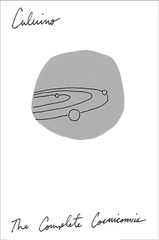

Cosmicomics
Le cosmicomiche
Buckle in, because Cosmicomics is where Calvino gets weird. "The Distance of the Moon" starts off the collection on a note that at least rhymes with his earlier work -- the idea of climbing a ladder from a boat to the moon is fanciful in the same way that the Our Ancestors books were, but once we're on the moon we're off to the races, fully separated from the more recognizable world of his earlier works. It's a heady mix, and I'm already planning to revisit several of these pieces in the future.
Several stories here played with the idea of necessary consequences, where from one set of initial states, everything else flows: the unnamed narrator of "The Shell" claims credit for all of vision by virtue of his creating something to be seen, Qfwfq's bets on the distant future in "How Much Shall We Bet". The latter goes beyond this, however, and introduces the idea of uncertainty (as Qfwfq eventually begins to lose those bets)
A couple of these stories felt current in a way Calvino couldn't have predicted. In particular, "The Dinosaurs" feels like an exploration of how we perceive and (consciously or not) manipulate history and recollection to suit our current needs, and "The Light Years" could have been written anytime in the last ten years about social media and our attempts to control the image we present to others.
If Last Comes the Raven had Calvino's first tentative steps into fantasy and fairy tale, this collection represents a major leap; the settings completely abandon anything familiar, and the only thing we have the context to fully understand are the characters and how they relate (whose interactions are for the most part as average and everyday as the settings are alien)